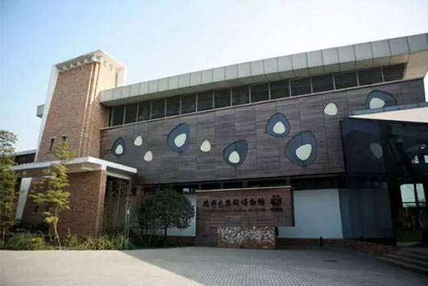
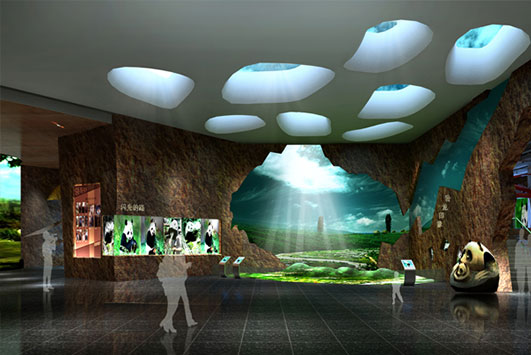
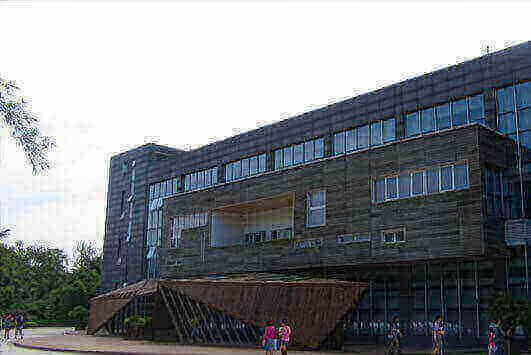
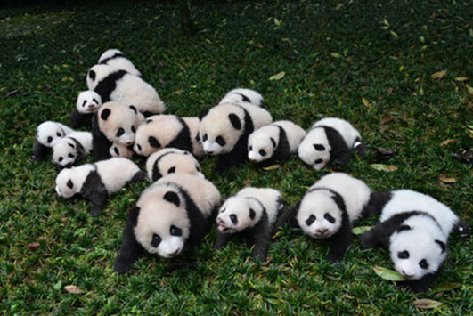
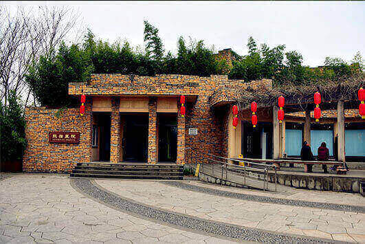
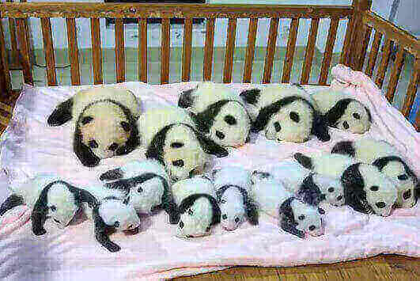
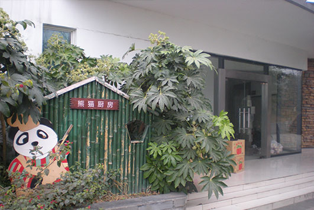
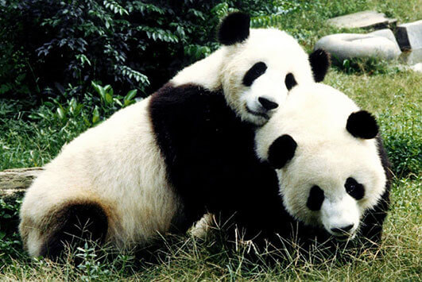

morly旅游网
说道熊猫你最先想到的是中国的那个城市，我想到的是四川成都。成都美食美景众多，但是我最喜欢的还是憨态可掬的大熊猫。
成都大熊猫繁育研究基地，是中国政府实施大熊猫等濒危野生动物迁地保护工程的主要研究基地之一，国家AAAA级旅游景区。也是我国乃至全球知名的集大熊猫科研繁育、保护教育、教育旅游、熊猫文化建设为一体的大熊猫等珍稀濒危野生动物保护研究机构。
在成都熊猫基地，你可以看到这些萌团子们的日常生活。熊猫长得憨态可掬，胖乎乎的身体，肥肥的四肢，身穿黑白相间的毛外衣，使它即使在严寒的冬天也不会感到寒冷，但是夏天可就不大好了，近几年网络上曾盛传的一张熊猫的图片，胖胖的身体背对着人们坐在水池边，让人感觉它已经热到怀疑人生了。画面令人想笑但又令人心疼。熊猫基地的熊猫经常围着奶爸、奶妈们撒娇，实在是太可爱了。这些萌团子也又令人头疼的地方，它们有时太过调皮了。在野外的熊猫，爬树是必备的技能。在基地的熊猫也十分热爱着这项运动，但是它们总是忽略了自己的体重。有些太过纤细的树木根本不能承受它的体重，当它吊在树上时，树枝变得越来越矮，只听咔嚓一声，熊猫已经连着树枝一起掉在了地上，还好它比较胖。虽然熊猫比较萌，但是你可别忽略了，它还是猛兽哦。大熊猫早先是食肉兽，后来经过进化才以竹子为食，然而肠胃还是保持原样，长长的爪子尤其锋利。所以不要被大熊猫憨态可掬的外表所迷惑，发起怒来还是相当可怕与危险的。不过也别被吓到，大熊猫一般是不会主动攻击人类的，只有当自己意识到危险的时候才会做出攻击的反应。大多数时候我们的胖达是十分可爱、温和的。
成都大熊猫繁育研究基地位于成都市成华区成都外北熊猫大道1375号。基地内有大熊猫博物馆，大熊猫科学探秘馆，熊猫医院和大熊猫厨房。大熊猫博物馆分为大熊猫、昆虫、脊椎动物三个展区，展出动物标本1600种12000件，植物标本30种30件，其它实物展品80件。大熊猫科学探秘馆，采取寓教于乐的方式，互动地向游客展示熊猫基地在大熊猫繁殖、育幼、遗传、内分泌研究以及生物多样性保护方面所做的各项研究工作。熊猫医院有大熊猫寄生虫标本、大熊猫常用药品以及各种大熊猫致病菌浮雕、各式展板等。大熊猫厨房展示了各种大熊猫食用竹及竹笋、水果，大熊猫窝窝头制作原料、流程以及成品供游客品尝，并配以简单图文说明。
景区门票
每人58元/次。
1、6周岁（不含6周岁）～18周岁（含18周岁）未成年人、全日制大学本科及以下学历学生购半票： 29元/人（请出示户口簿、居民身份证或学生证；香港、澳门、台湾等入境游青少年凭《港澳居民来往内地通行证》、《台湾居民来往大陆通行证》或学生证件等有效身份证明）；
2、60周岁（含60周岁）至70周岁（不含70周岁）老年人购半票：29元/人（请出示老年优待证）；
3、中小学生团体票：29元/人（请出示学校介绍信）；
4、成人团体票：53元/人（请出示单位介绍信）。
大熊猫博物馆
成都大熊猫博物馆位于成都外北斧头山成都大熊猫繁育研究基地内，始建于1992年。为迎接1993中国四川成都国际熊猫节而建造。分为大熊猫的分布，大熊猫的历史记载，大熊猫的生活奥秘，大熊猫的科学研究，大熊猫的保护和大熊猫保护的前景规划等几项。大熊猫馆、蝴蝶馆、脊椎动物馆各具特色，展览内容丰富有序，感观效果华丽庄重。 馆内共展出各类图照800多幅，并配以简要的文字说明，展示主要产自四川的标本实物2140多种、12450多件（只），其中兽类标本90多种、150多件，鸟类标本300多种、600余件，爬行动物标本120多种，两栖动物标本110多种，鱼类标本230多种，蝴蝶及其它昆虫标本1150多处、10000多只，化石及模型标本100余种，古今中外文献专著60多件。
 大熊猫科学探秘馆
“熊猫科学探秘馆”是基地新建“大熊猫博物馆”的“卫星馆”之一，它位于基地新建研究中心大楼一楼。该馆以“熊猫研究基地概览”、“神秘的大熊猫”、“熊猫的恋爱与婚配”、“熊猫的遗传探秘”、“生命的摇篮”、“熊猫和它的伙伴们”六个方面为展示主题，从科学、专业的角度，有深度地向中外游客充分展示出了熊猫基地研究中心繁殖研究室、遗传研究室、营养研究室和内分泌研究室四个部门所从事的研究工作及取得的丰硕成果。
 熊猫医院
熊猫医院位于成都外北斧头山成都大熊猫繁育研究基地内,有大熊猫寄生虫标本、大熊猫常用药品以及各种大熊猫致病菌浮雕、各式展板等。
 大熊猫厨房
大熊猫厨房成都市成华区外北三环熊猫大道1375号成都大熊猫繁育研究基地内,展示了大熊猫食用的各种竹及竹笋、水果，大熊猫窝窝头制作原料、流程以及成品供游客品尝，并配有一些简单的图文说明。
 内容整理至网络，如有侵权，请联系我们！1255394075@qq.com